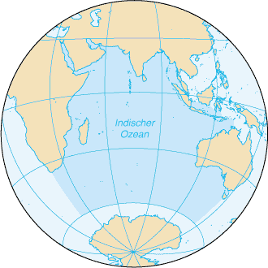
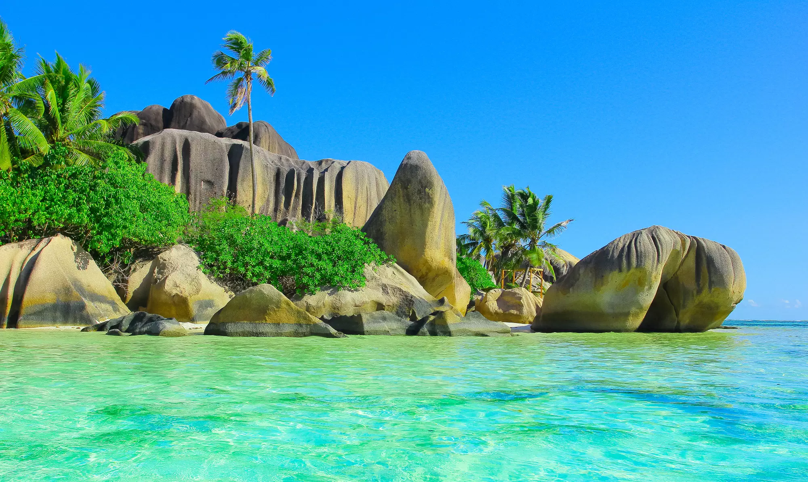

Auf den Punkt
Der Indische Ozean ist mit 74,9 Millionen km² Fläche (ca. 14,7 % der Erdoberfläche) der drittgrößte Ozean der Erde und ist mit Temperaturen von 22 °C bis 28 °C der wärmste Ozean der Erde.Er fasst ein Volumen von ca. 291,9 Mio km³, die maximale Meerestiefe beträgt 7.290 Meter. Der Indische Ozean liegt zum größten Teil auf der Südhalbkugel. Er grenzt an die Kontinente Afrika, Asien und Australien sowie an den Atlantischen Ozean, den Pazifischen Ozean und entlang des südlichen 60°-Breitenkreises an den Antarktischen Ozean.
Ozean Part 1
Der Indische Ozean ist durch ein zentrales System von Rücken in elf verschiedene Tiefseebecken gegliedert.
Im Indischen Ozean liegen große Inseln, wie Madagaskar und Ceylon, und Inselgruppen, wie die Seychellen und Malediven. Seine Lage im tropischen und außertropischen Klimabereich bestimmt das Klima und die Meeresströmungen. Die wichtigsten Meeresströmungen sind Nord- und Südäquatorialstrom und Äquatorialer Gegenstrom. Seit Ende des 19. Jh. wird die systematische Erforschung des Indischen Ozeans und seiner Ressourcen betrieben.
Ozean Part 2
Schon vor dem Altertum reisten Menschen an den Küsten des Indischen Ozeans. Menschen aus Asien besiedelten Madagaskar. Seefahrer des Alten Ägyptens kamen bis in den Süden Afrikas, und auch Araber segelten nach Süden. Darum sind viele Menschen an der Ostküste Afrikas Muslime.
Ozean Part 3
Heute fahren viele Schiffe über den Indischen Ozean und verbinden damit Europa und Afrika mit Asien. Wichtig dazu ist der Sues-Kanal, den man vor 150 Jahren gebaut hat. Dadurch können Schiffe vom Mittelmeer ins Rote Meer fahren, das bereits zum Indischen Ozean gehört. Viele Inseln dieses Ozeans ziehen Touristen an, wie die Seychellen und Réunion. Allerdings ist der Ozean auch gefährlich: Vor allem an der Küste von Somalia überfallen Piraten Schiffe und verlangen Lösegeld.
Ozean Part 4
Wer seinen Urlaub am Indischen Ozean verbringen möchte, kann auch nach Sri Lanka reisen. Ein reiches Kulturerbe und landschaftliche Schönheit zeichnen den Inselstaat rund 250 Kilometer östlich von Indien aus. Von hier stammen Kokosnüsse, Kaffee, Kautschuk und der berühmte Ceylon-Tee. Auch die traditionelle Heilkunst des Ayurveda hat hier ihren Ursprung.
Auf den Punkt Part 2
1874 begann das britische Forschungsschiff „Challenger“ die wissenschaftliche Erforschung des Indischen Ozeans. Von 1959 bis 1965 waren 40 Forschungsschiffe aus 20 Ländern an der Indischen-Ozean-Expedition beteiligt.
1988 schlossen sich die zentralen und östlichen Anrainerstaaten des Indischen Ozeans zusammen, um die gewaltigen natürlichen Ressourcen dieses Meeres genauer zu erforschen.